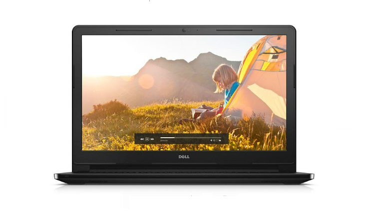

Dell N3552: Thiết kế đẹp, nhiều tiện ích mới mẻ
Dell N3552 có một thiết kế đẹp, linh hoạt và được trang bị khá nhiều tiện ích cũng như hiệu năng sử dụng mượt mà với màn hình lớn 15.6 inch cùng hệ điều hành Windows 10 bản quyền. Sản phẩm có mức giá rất phù hợp với học sinh, sinh viên hay nhân viên văn phòng cần một chiếc laptop phục vụ tốt cho công việc nhưng vẫn có những trải nghiệm mới lạ.
Thiết kế tối ưu cho cả làm việc và giải trí
Dell N3552 tạo ấn tượng bằng thiết kế nam tính đầy mạnh mẽ nhưng vẫn rất gọn gàng nhờ các góc bo tròn và kích thước tổng thể vừa vặn với chiều dài 380mm, ngang 260,3mm và cao 21,7mm. Vỏ máy được làm từ chất liệu nhựa cho cảm giác thân thiện, đồng thời giúp máy trở nên nhẹ nhàng hơn so với trong lượng của những chiếc laptop 15,6 inch cùng phân khúc. Nhờ vậy, người dùng có thể dễ dàng bỏ máy vào balo hay túi xách và mang theo bên mình mỗi khi di chuyển.
Thoải mái trải nghiệm với màn hình 15,6 inch 
Màn hình của Dell N3552 có kích thước lớn 15,6 inch mang đến cho người dùng một không gian thoải mái để làm việc cũng như giải trí, đặc biệt là khi xem phim hay chơi game. Độ phân giải chuẩn HD 1366x768 pixels kết hợp cùng công nghệ màn hình HD WLED TrueLife cho ra những hình ảnh rõ ràng, sắc nét, chi tiết và đầu đủ, đồng thời giúp góc nhìn rộng hơn và màu sắc hiển thị chân thực hơn.
Cấu hình ổn, hiệu năng mượt mà
Bên trong Dell N3552 là bộ vi xử lý Intel Pentium N3050 xung nhịp 1.6GHz và có thể chạy lên tốc độ tối đa Burst Frequency 2.16 GHz đi kèm bộ nhớ RAM 2GB và chip đồ họa tích hợp Intel HD Graphics. Cấu hình tương đối này giúp người dùng có thể dễ dàng sử dụng các ứng dụng văn phòng như Word, PowerPoint hay lướt web, xem phim cũng như chơi một số game giải trí nhẹ nhàng. Nếu cảm thấy cần thiết thì bạn cũng có thể nâng cấp bộ nhớ RAM tối đa lên 8GB để thực hiện được nhiều tác vụ và nhu cầu hơn. Ngoài ra, máy còn có ổ cứng HDD dung lượng 500GB giúp bạn yên tâm lưu trữ dữ liệu mà không lo bị đầy bộ nhớ.
Hệ điều hành Windows 10 mới nhất

Dell N3552 được tích hợp sẵn hệ điều hành Windows 10 của Microsoft, nghĩa là khi mua máy về bạn sẽ không phải cài Win như một số sản phẩm khác. Hơn nữa, Windows 10 còn là hệ điều hành mới nhất và tốt nhất với giao diện thân thiện, dễ sử dụng và nhiều tính năng cao cấp, hứa hẹn sẽ mang đến người dùng những trải nghiệm mới mẻ và thú vị. Nhờ có bản quyền đầy đủ, máy tính của người dùng cũng sẽ được cập nhật các tính năng hay các bản vá lỗi cũng như luôn được bảo mật an toàn giúp bạn luôn yên tâm khi sử dụng.
Bàn phím số tiện dụng, Touchpad thông minh
Dell N3552 được trang bị bộ bàn phím chiclet hiện đại với các phím bấm lớn, vuông vức được bố trí hợp lý, rộng rãi cũng bộ phím sô bên phải, rất thuận tiện cho các thao tác nhập liệu của người dùng, nhất là những người phải thường xuyên làm việc với các con số. Touchpad của máy cũng được thiết kế rộng rãi, mịn màng và có độ nhạy cao giúp bạn làm mọi việc dễ dàng và thoải mái như đang sử dụng chuột rời.
Đầy đủ kết nối
Do hai cạnh bên được thiết kế khá mỏng nên Dell N3552 bị cắt đi một số cổng kết nối như cổng mạng LAN hay ổ đĩa DVD, tuy nhiên máy vẫn có đầy đủ các cổng kết nối cần thiết của một laptop, bao gồm jack cắm tai nghe 3.5mm thông dụng, cổng USB 3.0 tốc độ cao, cổng USB 2.0, cổng trình chiếu HDMI, khe đọc thẻ đa năng. Bên cạnh đó, kết nối Wifi cũng giúp bạn thuận tiện hơn khi truy cập Internet để lướt web, nghe nhạc hay xem phim online,…